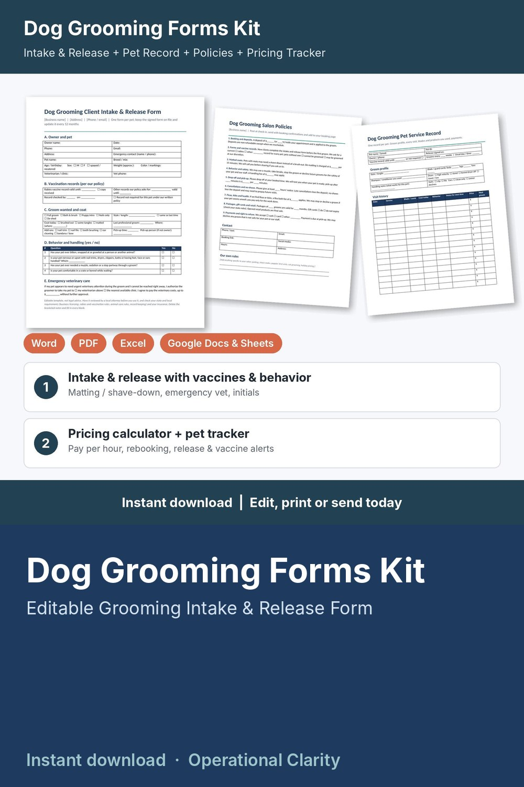

Dog Grooming Forms Kit

Get the release and vaccine record on file, price every groom so it pays you, and know when each pet is due back: a complete dog grooming forms kit with a working pricing calculator and pet tracker, not just a few printable pages.
WHAT'S INSIDE
- Dog Grooming Client Intake & Release Form (Word + PDF, 2 pages): owner and pet details, vet, vaccination records (valid-until date, copy received, or "not required" under your policy), groom wanted and coat condition, behavior and handling yes / no questions, simple yes / no owner self-disclosure questions, emergency vet authorization with a spending limit you set, 7 initialed acknowledgments (matting and shave-down, nicks, seniors and stress, behavior and muzzles, fleas, policies), release, before / after photo consent, owner and groomer signatures, yearly update log.
- Dog Grooming Pet Service Record (Word + PDF, 2 pages): groom profile (style, blades and guard combs, shampoo, dryer, handling notes), visit history (service, blade / comb, coat, behavior, notes for next time, price, next groom), retail, deposits and balances, packages and memberships, before / after photo log.
- Dog Grooming Salon Policies (Word + PDF): 9 ready-to-edit policies for deposits, forms and vaccine records, matted coats, behavior and safety, drop-off and pick-up, cancellations and no-shows, fleas and health, packages / gift cards / retail, payments and right to refuse.
- Groom Report Cards (in the policies file): 2 per page to send home with each pet: what was done, coat, how they did, groomer notes, next groom.
- Dog Grooming Pricing Calculator & Client Tracker (Google Sheets / Excel, 6 tabs):
* Service Menu: minutes, product cost (shampoo, blades, supplies) and your price for each groom, bath and add-on; suggested price from your target hourly pay, overhead and card fees; what you keep and your real pay per hour; BELOW SUGGESTED flag
* Settings: target pay, monthly overhead, booked hours, card fees, deposit % and minimum, rounding, and a grace period after a vaccine record expires (your own policy)
* Clients: one row per pet with owner contact, breed / size / coat / style notes, release signed date, vaccine record valid-until date or "not required" mark, visits, total spent, retail bought, next groom due and rebook alerts (REBOOK NOW / DUE SOON / BOOKED)
* Appointments: service and add-on looked up from your menu, discounts, deposits, refunds, status, retail sold, days since last groom, balances and alerts (RELEASE MISSING / VACCINES MISSING / BALANCE DUE / DEPOSIT DUE / SEND FORMS / VACCINES DUE / UPCOMING / UPDATE STATUS)
* Dashboard: service revenue, retail sales, tips, product costs, card fees, what you keep, pay per hour worked, average ticket, no-show rate, deposits held, month-by-month and service-by-service tables, chart and a list of appointments that need attention
- START HERE guide (PDF)
HOW IT WORKS
1. Enter your target pay, overhead, card fees and vaccine record policy on Settings.
2. Add your grooms, baths and add-ons on the Service Menu tab and fix anything flagged BELOW SUGGESTED.
3. Edit the policies, then send new clients the policies and the Intake & Release Form before the first groom; note the release date and vaccine record date on Clients.
4. Log each booking and deposit; price, time and product cost fill in automatically.
5. After each groom, record payment, tip and retail sales, fill in a report card, and watch the alerts for missing releases or vaccine records, balances, deposits and pets due back.
Example data (8 services, 14 sample pets, 44 appointments) shows how it all connects; delete it and type your own. Yellow cells = type here, green cells = calculated.
FORMATS
- Word .docx (edit in Microsoft Word, Google Docs, Pages or LibreOffice) + PDF, US Letter
- Excel .xlsx made for Google Sheets (also works in Excel and LibreOffice; no macros)
This is an instant digital download, no physical item will be shipped.
Editable template, not legal advice. Have it reviewed by a local attorney and check your state and local requirements (business licensing, rabies and vaccination rules, record keeping) and your insurance before you use it. The owner questions are simple yes / no self-disclosures: information only, not a veterinary or medical screening tool and not veterinary advice.